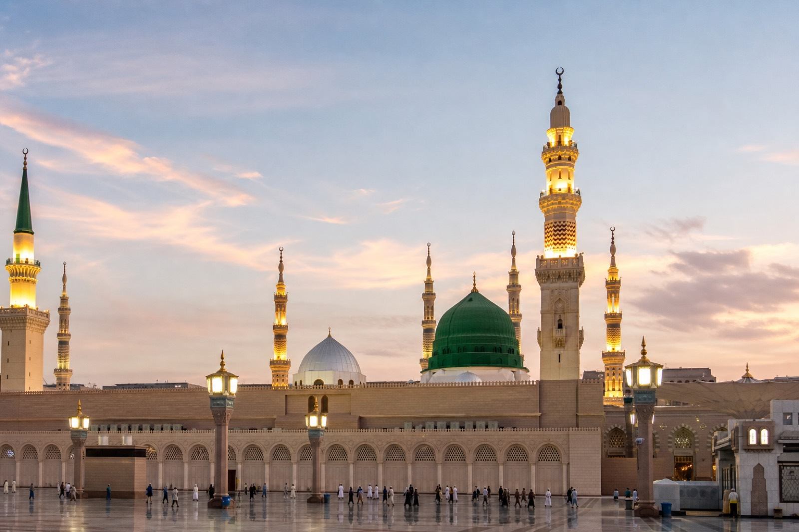

NoorLink
Complimentary gift with your purchase
Places of Meaning
A short ziyārah list for Makkah and Madinah, with etiquette that protects your worship and the people around you.

Complimentary gift with your purchase
A short ziyārah list for Makkah and Madinah, with etiquette that protects your worship and the people around you.
Ṭawāf, prayer, Zamzam, and Sa‘ī. Soft voice. Give way to elders and families.
Part of the rites for most pilgrims. Do not sit in the walking lanes.
A hard climb in heat. Only if you are fit. Not required for Umrah.
Mainly for Hajj days with your agency. Follow your group schedule.

Worship first — arrival stress fades when the heart is present.
Pray with presence. Send ṣalawāt upon the Prophet ﷺ.
Do not harm others for space. Acceptance is with Allah — not a photo.
Many visit for two rakʿahs. Keep the visit short and calm.
Places of history and reflection. Go with a plan; do not litter.
Keep your intention clean. Prefer quiet dhikr over loud arguing. If you make a mistake in a rite, ask a knowledgeable person calmly.
Do not push in ṭawāf, Sa‘ī, or the Rawḍah. Help those who need space. Keep group meeting points clear.
Carry ID as required. Follow Nusuk / Tawakkalna / official instructions when they apply. Respect photography restrictions. Walk away from pressure sales.
Rest and hydrate. Charge your phone and power bank. Install your NoorLink eSIM on Wi‑Fi before you fly so connection is one less stress on arrival.

Prepare at home — arrive ready for worship.